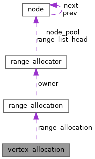

|
GL CHOCO ENGINE
|
|
GL CHOCO ENGINE
|
VBO Managerから取得したvertex allocationを表すhandle. More...
#include <vbo_manager.h>

Data Fields | |
| range_allocation_t | range_allocation |
VBO Managerから取得したvertex allocationを表すhandle.
vbo_manager_write()によって確保されたVBO内rangeの位置、実確保サイズ、 allocation identity、および生成元Range Allocatorを保持する。
現在はrange_allocation_tを内包し、VBO内rangeの管理を Range Allocatorへ委譲している。
本handleはvbo_manager_free()へ渡すまで変更してはならない。 内部fieldを変更すると、対応するlive allocationを解決できなくなる。
vbo_manager_free()はhandle自体を変更しない。 free成功後も各fieldの値は残るが、live allocationを表さなくなるため、 再度vbo_manager_free()へ渡してはならない。
VBO Managerを破棄した場合、そのVBO Managerから取得した すべてのvertex_allocation_tは無効となる。
| range_allocation_t vertex_allocation::range_allocation |
VBO内rangeのallocation descriptor